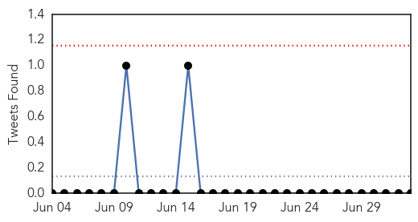
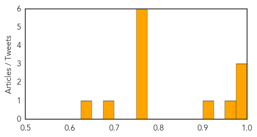

Dengue Fever
30-Day Web Trend
5 alerts, 5 warnings

30-Day Twitter Trend
3 alerts, 0 warnings

Article Locations

Article Confidences

Top Articles:
- 0.983
- Mosquito borne disease hits Townsville
- 0.978
- Asia dengue fever update: Philippines, Malaysia, Thailand, Vietnam and Singapore
- 0.957
- More dengue cases in American Samoa
- 0.954
- Dengue's tail's tale: How virus evolves to spread more efficiently
- 0.952
- Dengue`s tail`s tale: How virus evolves to spread more efficiently
- 0.913
- Dengue cases up in NorMin, 11 deaths recorded
- 0.900
- S'pore team closer to creating 4-in-1 'cocktail' to fight dengue, news, Health News, AsiaOne YourHealth
- 0.898
- Genetically Engineered Mosquitoes Reduce Dengue Transmitters by 95 Percent – Entomology Today
- 0.873
- Oxitec mosquito works to control Aedes aegypti in dengue hotspot
- 0.858
- Action plan to beat mosquito-borne diseases in Delhi
- 0.850
- Health Department has failed to contain diseases: BJP, CPI
- 0.830
- Researchers Edge Closer to Cure for Dengue Fever
- 0.809
- More dengue cases reported in Bishan North
- 0.795
- Health Ministry says local authorities not doing enough to curb dengue
- 0.706
- Local authorities criticised for not doing enough to curb dengue – BorneoPost Online
- 0.697
- MP: seek help from private medical colleges, students
- 0.692
- Asia Briefs: Dengue cases prompt warning in HK, Asia News & Top Stories
Top Tweets:
- 0.501
- Flavivirus news: More dengue cases reported in Bishan North - Channel News Asia: More dengue ca... http://t.co/7I2vxlT8tG pathogenposse
Influenza
30-Day Web Trend
0 alerts, 0 warnings
30-Day Twitter Trend
0 alerts, 0 warnings

Article Locations
Article Confidences
Top Articles:
- 0.999
- Dumaguing: Beware of the flu
- 0.981
- Its bark is worse than its bite (so far)
- 0.978
- IAEA deploys nuclear-derived techniques for early detection of avian flu in West Africa
- 0.972
- Rosmann: Health advisories from CDC calm avian flu worries
- 0.901
- Montcalm County child dies from meningitis
- 0.751
- July 3, 2015 Archives
- 0.751
- July 2, 2015 Archives
- 0.751
- July 2, 2015 Archives
- 0.751
- July 2, 2015 Archives
- 0.751
- July 2, 2015 Archives
- 0.751
- July 2, 2015 Archives
- 0.687
- Central Pa. poultry industry takes precautions against bird flu
- 0.641
- Tennessee preparing for possible spread of bird flu
Top Tweets:
-
No tweets found for Jul 03, 2015